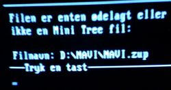
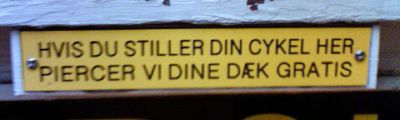
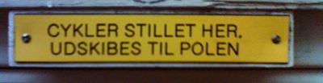
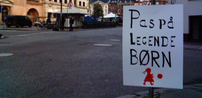

Kl 10:43 d.27.09.2004 af Jonas
Det virkede fandeme!
Åh ja, der skal ikke meget til at glæde mig. Pga, venlig guidning fra Pollas
kunne der også godt ende med at komme noget moblog-agtigt på nærværende
bamse, men jeg er nu ikke helt sikker på at jeg kan hitte ud af det.
Vi får se. Indtil videre kan man da starte med at få inkluderet buzznet-billederne her på siden.
Kommentarer [ 0 ]
Kl 18:52 d.25.09.2004 af Jonas
Er der nogen Navisionkyndige der læser dette, så må de meget gerne
komme med et bud hvorfor man får følgende fejl, når man forsøger at
starte Navision.

Jeg mangler nemlig stadig at få mit store Windows- og Navisionkørekort.
Kommentarer [ 3 ]
Kl 17:53 d.25.09.2004 af Jonas


Set foran piercingbutik i Studiestræde.
Kommentarer [ 0 ]
Kl 17:43 d.25.09.2004 af Jonas
Kommentarer [ 2 ]
Kl 18:22 d.24.09.2004 af Jonas
Rune er tilbage, efter lang tids pause. Velkommen tilbage.
Kommentarer [ 2 ]
Kl 16:50 d.24.09.2004 af Jonas
Så er det muligt at høre BBCs radiospilsversion af Hitchhikers Guide to The Galaxy i Real eller WMP format.
Hver episode er tilgængelig i syv dage efter deres udsendelse.
Jeg sidder og hører det nu, overraskende lækker kvalitet på en 512Kb linie.
Så kan man sidde og høre den mens man venter på at filmen kommer ud.
Kommentarer [ 4 ]
Annoter nettet med Wikalong
Kl 2:26 d.24.09.2004 af Jonas
Jeg faldt over Wikalong forleden, et plugin til Firefox, det herlige væsen, som gør det muligt at annotere den webside du er indepå, wiki-style, via din Sidebar.
Endnu en omgang meta-blogging in the making, men denne gang lige
lidt mere live og lige på, end f.eks. del.icio.us, og hvad de ellers
hedder, de andre metamakkere.
Folkene bag wikalong foreslår, at man kan bruge den til at lave:
- Interaktive pointers fra et website til et andet med relevant og interessant information
- Diskussion
- Noteapparat
- Roaming blog, hvor man kan blogge, og andre kan skrive deres kommentarer
- Website udvikling
Jeg ved ikke, den der roaming blog ting, det er jo et udmærket
alternativ til de forskellige kommentarsystemer man kan knytte til sin
hjemmeside. Men det kræver jo desværre, at alle anvender Firefox, og
har installeret Wikalong, og det, mine venner, er der vist lange
udsigter til.
Alle de gode idéer, al den lock-in.
Kommentarer [ 0 ]
Kl 12:50 d.22.09.2004 af Jonas

Det er i dag officiel bilfri dag i indre by, og jeg må sige det er en sand fornøjelse at have vinduerne åbne.
Ingen folk på/i motoriserede køretøjer, lige bortset fra dem der har fået special tilladelse, og det kan mærkes.
Kommentarer [ 5 ]
Kl 16:45 d.21.09.2004 af Jonas
Hvem havde troet, at Nik og Jays "En dag tilbage" oprindeligt var
inspireret af et nummer med nogle der kalder sig Nikodemus and Jay?
God underholdning, selv om det fylder små 40Mb
Nikodemus og Jay: Firs år tilbage.
Og det er naturligvis Alexanderband der står bag.
Kommentarer [ 3 ]
Kunder og service giver kundeservice
Kl 15:06 d.21.09.2004 af Jonas
Jeg ved ikke hvad man skal kalde det, når ens elektricitetsværks
kundeserviceafdeling sender et brev angående aflæsning af ens elmåler,
og der i det står at man selv skal aflæse sin elmåler.
Så deres service består altså i, at gøre mig opmærksom på, at jeg selv skal udføre deres arbejde. Fair nok.
Sjovt som servicebegrebet bliver udvidet/indskrænket/whatever i disse tider.
Kommentarer [ 0 ]